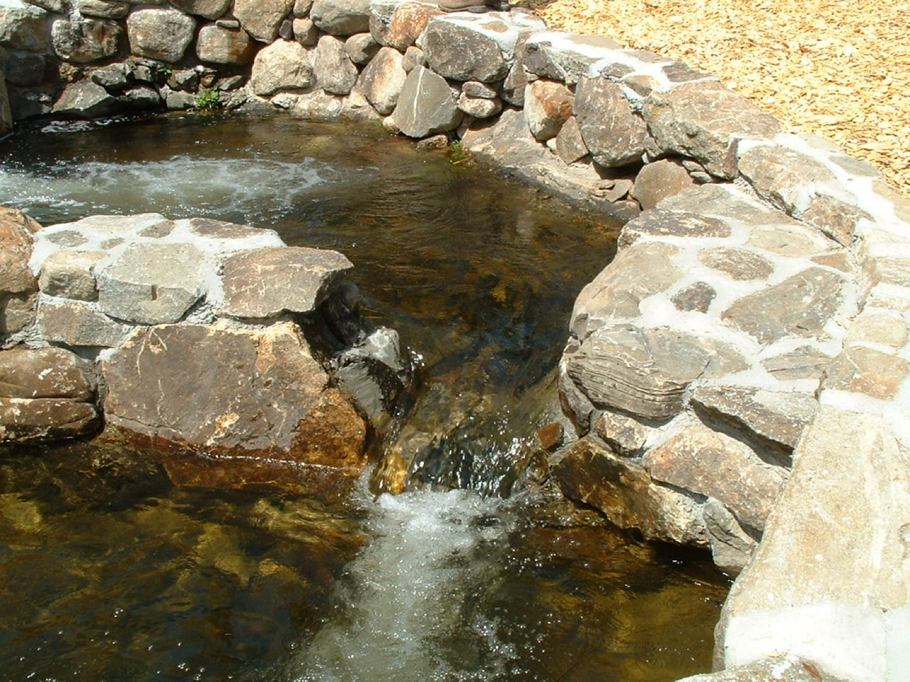

Sheet L-1 · Design
See your yard
before it's built.
Steve Botto designs your landscape first, with drawings and color renderings you can walk through together, then builds exactly that. Walkways, walls, plantings and water features from Congers, NY.
Process
No scraps of paper. A real plan.
One client got three bids. Two came on a scrap of paper or as two lines in an email. Steve showed up with a color landscape design and a detailed written estimate. “The choice was a no brainer.”
- 01
Walk the property
Steve listens to what you want and looks hard at the difficult areas.
- 02
Design it on screen
Computer images and a color-printed design, so you can see the finished yard before anything is dug.
- 03
Detailed estimate
A clear, itemized written estimate, gone over with you line by line.
- 04
Build & stand behind it
The crew shows up on time and does what was agreed. If something goes wrong later, Steve handles it.

Services
Design, build & care.
- Landscape design
- Whole-property redesigns, done all at once or over the years.
- Walkways, steps & driveways
- Paver walkways and full front-entry reconstructions, for homes and businesses.
- Retaining walls
- Walls that solve slopes and look like they belong.
- Water features
- Stone waterfalls and natural-looking water elements.
- Plant health care
- Fertilization and pest treatment that have saved clients' trees and shrubs.
Clients
Clients for 10 and 15 years.
“Steve showed up with his Ipad display and a detailed (color printed) landscape design of what he envisioned. He took his time and went over everything in a clear concise presentation. The choice was a no brainer.”
“I have been a happy customer of Steve Botto's for about 15 years. He redesigned my entire property over the years… He provides computer images for you to envision the future plan.”
“Steve has been our landscaper over the past 10 years for my home and business… He's helped save several trees and shrubs in our home landscape through [proper] fertilization and pesticide application.”
Excerpts from public Google reviews.
Visit & call
197 Route 9W, Congers.
(845) 634-2557Monday–Friday · 9 AM–5 PM
Saturday & Sunday · Closed
Steve is active in the Congers community, too. Clients mention his volunteer landscape work.